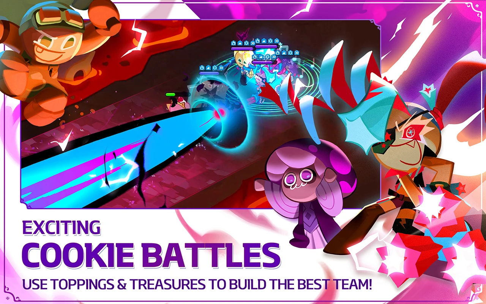
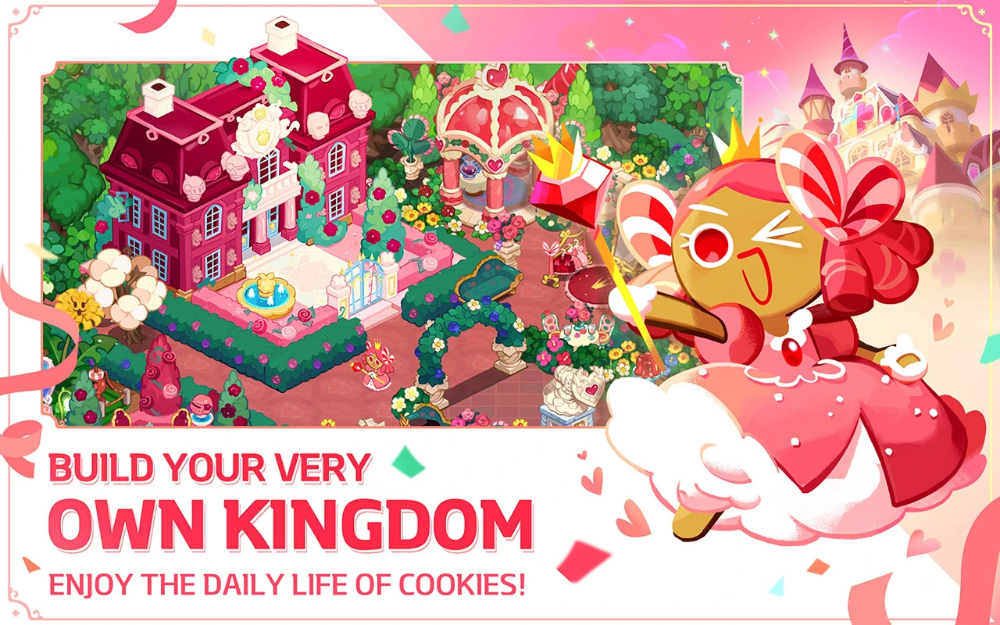
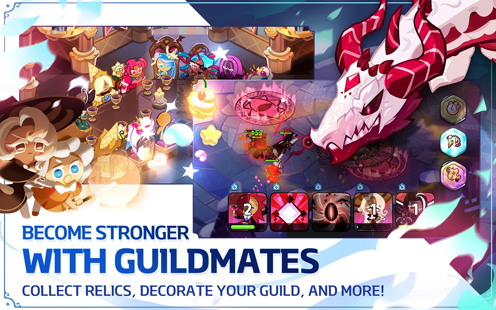

Story Mode in Cookie Run Kingdom is the main gameplay mode where players progress through the game's storyline by completing various stages and levels. In Story Mode, players control their team of cookies as they battle against a variety of enemies and bosses, collect treasures, and unlock new areas.
The storyline of Cookie Run Kingdom follows the journey of the cookies as they try to save their kingdom from the evil Licorice King and his army of food minions. As players progress through the game, they will encounter new characters and locations, uncover the secrets of the kingdom's past, and ultimately face off against the Licorice King himself.
Each stage in Story Mode is represented by a map with multiple levels, and players must complete each level in order to progress to the next. Levels are populated with a variety of enemies and obstacles, and players must use their skills and strategy to defeat them while avoiding taking too much damage.
As players progress through Story Mode, they can earn rewards such as coins, experience points, and new cookies to add to their team. The difficulty of the levels increases as players progress, with more challenging enemies and boss battles, requiring players to level up their cookies and strategize their team composition to succeed.
Overall, Story Mode is the core of Cookie Run Kingdom's gameplay, offering an engaging storyline and a challenging, rewarding experience for players to enjoy.
Arena Battles


Arena Battles in Cookie Run: Kingdom are a type of player-vs-player (PvP) battle that takes place in a special arena area within the game. In Arena Battles, players form teams of up to five Cookies and compete against other players' teams in real-time battles.
The goal of Arena Battles is to defeat as many enemy Cookie teams as possible while keeping your own team alive. Players earn points for each victory, which are used to climb the Arena Battle rankings and earn rewards.
To participate in Arena Battles, players must have a certain number of Arena Tickets, which are earned by completing daily quests or purchased with in-game currency. Arena Battles are available for a limited time each day, and players can participate in a certain number of battles per day based on their Arena Ticket supply.
Arena Battles are a fun and challenging way to test your team-building skills and compete against other players in Cookie Run: Kingdom.
Bounties
Bounties in Cookie Run: Kingdom are a type of in-game quest that allows players to earn various rewards by completing certain objectives. These objectives can range from defeating a certain number of enemies, collecting a specific type of item, or completing a set number of battles within a certain time frame.
Bounties are available to players from the moment they start playing the game and are an essential part of progressing through the game's story mode and leveling up their Cookies. Completing Bounties can reward players with a variety of items, including coins, experience points, gacha tickets, and even rare Cookies.
Players can access Bounties from the game's main menu by selecting the "Bounty" tab. From there, they can see a list of available Bounties, as well as their progress on any active Bounties they have accepted.
In addition to the standard Bounties, Cookie Run: Kingdom also offers special event Bounties that are available for a limited time and offer even greater rewards. These can include exclusive Cookies, costumes, and other rare items.
Overall, Bounties are an important and rewarding aspect of Cookie Run: Kingdom that offer players a fun way to progress through the game and earn valuable rewards.
Tower of Sweet Chaos

The Tower of Sweet Chaos is a special gameplay mode in Cookie Run: Kingdom that challenges players to climb a tower of increasingly difficult stages. Each stage of the tower is filled with enemies that the player must defeat using their team of Cookies.
As players progress through the tower, the difficulty of the stages increases, and they must strategize and adapt their team compositions to overcome new challenges. The ultimate goal is to reach the top of the tower and defeat the final boss, which offers great rewards upon completion.
The Tower of Sweet Chaos is available to all players from the moment they start playing the game and can be accessed from the main menu. Players can attempt the tower as many times as they like, but progress is reset each time they reach the top.
To enter a stage of the Tower of Sweet Chaos, players must spend a certain number of keys, which can be earned through various in-game activities, such as completing daily quests or purchasing with in-game currency. Each time a stage is completed, players earn rewards such as coins, experience points, and special items.
The Tower of Sweet Chaos is a challenging and exciting aspect of Cookie Run: Kingdom that offers players a chance to test their skills and earn valuable rewards. It's a great way to add some variety to gameplay and keep things interesting for both new and experienced players alike.
Contacts
For business proposals or other questions, write to us here:Gmail